UMAIN WORKS · UX case study
Cupola
Uma shell comum para os produtos de IA da UMAIN WORKS: um só modelo mental para ações, áreas e navegação.
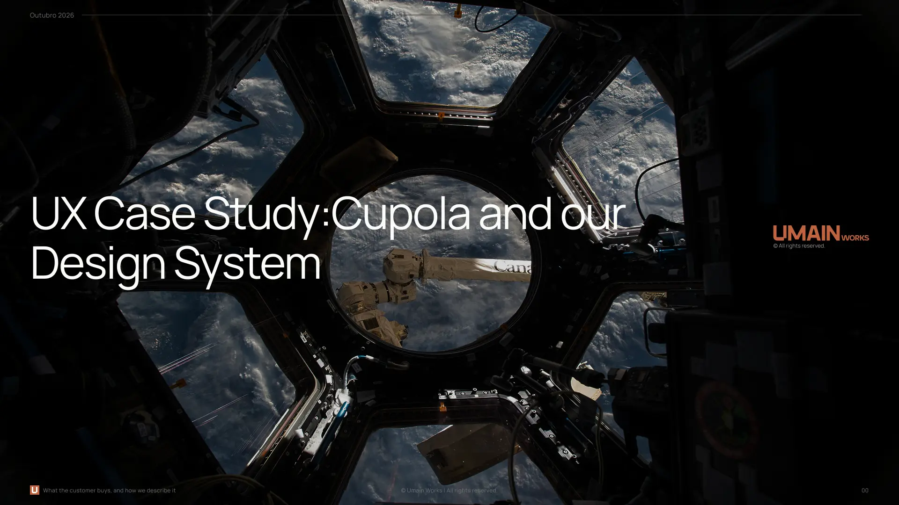
A versão curta
Cada produto nasceu sozinho — com a sua interface, o seu login e o seu vocabulário de ações. Para quem usava vários, não havia uma shell comum.
Mapear com todos os Product Owners o que cada módulo permite fazer, agrupar as ações em famílias e desenhar a shell Cupola e o design system da marca.
Shell, famílias de ações e design system em protótipo; testes com utilizadores com plano e datas por confirmar.
- Módulos com ações inventariadas
- 11
- Ações mapeadas em famílias
- 195
- Famílias de ações (13 letras + ⚙ + ⌂)
- 15
- Product Owners envolvidos
- 9
- Componentes documentados
- 49
O Cupola junta os produtos (módulos) da UMAIN WORKS numa única experiência.
O trabalho de UX cobriu um design system próprio da marca, o conceito Cupola e os seus módulos, uma taxonomia de famílias de ações construída com todos os Product Owners, e a separação entre Core, Vertical Packs e Connectors.
Sobre a UMAIN WORKS
Construído a partir de implementações reais, não de teoria. A UMAIN WORKS é uma consultora e fornecedora de soluções de IA: descobre onde a IA cria valor, integra componentes comprovados e adapta as soluções a cada negócio — sem vender uma tecnologia específica.
- Fundada em Portugal, com uma equipa de mais de 41 profissionais numa estrutura enxuta.
- Presença em 6 países: Portugal, Espanha, Reino Unido, Canadá, Emirados Árabes Unidos e Angola.
- Abordagem: arquitetura aberta, foco no negócio, orientada para o ROI e atenta à governação.
- Discover · Integrate · Adapt — AI Value Discovery; componentes comprovados com governação; soluções à medida, formação e compliance.
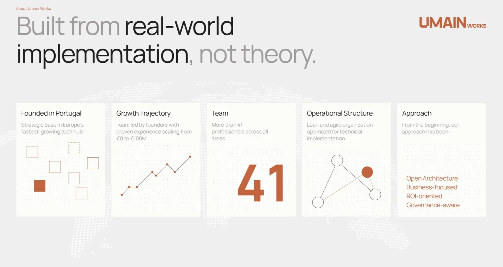
Os produtos organizam-se em quatro pilares: Lumina (educação e formação), Structa (construção, engenharia e indústria), Impulsa (equipas comerciais) e Nexa (voz, chat e comunicação). O Cupola é a shell que os transforma num só produto.
Mais em umain.works.
O problema
Cada produto da UMAIN WORKS nasceu sozinho: com a sua interface, o seu login, o seu vocabulário de ações. Para quem usava vários, não havia uma shell comum.
Todas as empresas faziam a mesma pergunta: que ferramenta de IA?
O resultado era inteligência isolada — IA que só vê o canto para o qual foi comprada.
Dois nomes para a mesma coisa
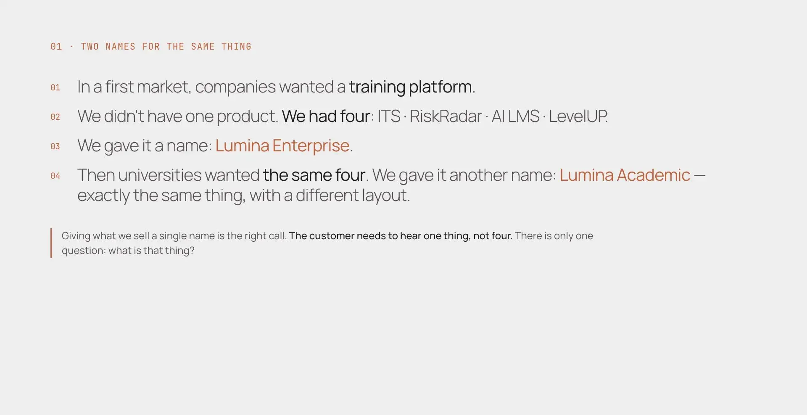
Dar um único nome ao que vendemos é a decisão certa. O cliente precisa de ouvir uma coisa, não quatro.
- A mesma intenção, escrita de muitas formas. «Gerar novos leads» (LeadFlow), «Gerar uma proposta» (QuoteGenius), «Extrair dados de um documento» (DocuMiner), «Confirmar a BOM» (BOMify), «Registar um risco» (RiskRadar). A intenção repete-se; o lugar, o nome e o comportamento do botão não.
- Todos os produtos repetiam o mesmo trabalho. A identidade (login, sessão, utilizadores e equipas), as definições e as barras de ações viviam dentro de cada produto.
«Login/sessão, utilizadores e equipas, tema» — blocos que, no levantamento, passaram a ser shell do Cupola, e não módulo.
Encontrar o que é comum
Em conjunto com cada Product Owner, mapeámos todas as funcionalidades de todos os módulos. Antes de desenhar qualquer ecrã, fizemos um levantamento com todos os POs para definir o que cada módulo permite ao utilizador fazer. Foi desse trabalho partilhado que nasceu o conceito de famílias de ações: as mesmas intenções, nomeadas uma vez, para todos os produtos.
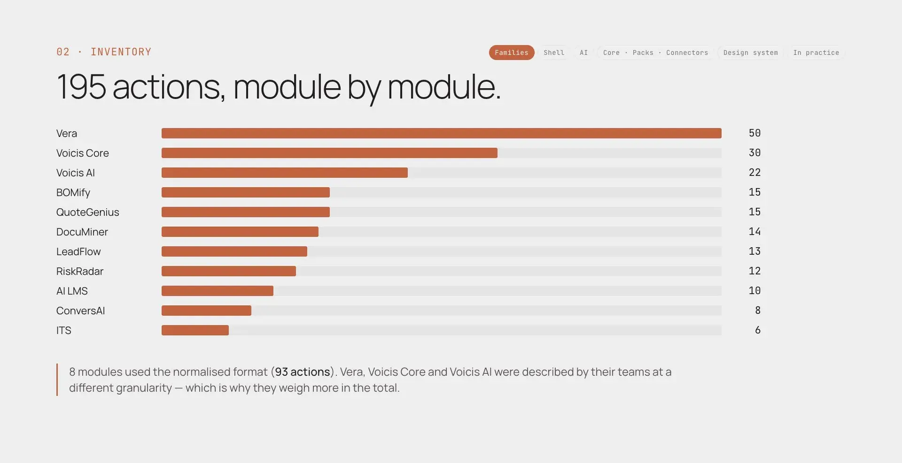
- 195 ações em 11 módulos. 8 módulos usaram o formato normalizado (93 ações); Vera, Voicis Core e Voicis AI foram descritos com outra granularidade, por isso pesam mais no total.
- Escritas e corrigidas por quem conhece cada produto: 9 Product Owners envolvidos, 13 produtos consultados, 12 responderam (1 de forma incompleta).
As 195 ações cabem em 15 famílias
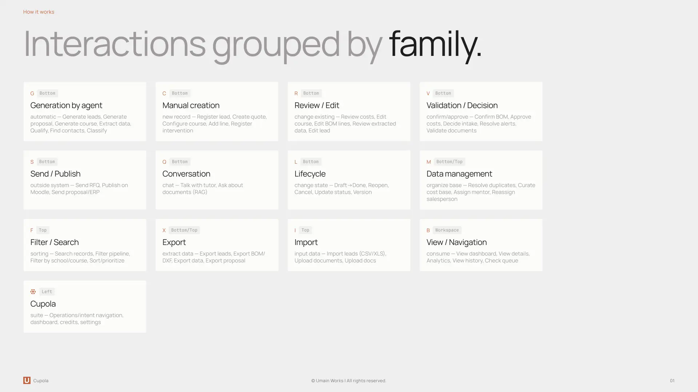
Os casos que não encaixavam ensinaram mais
- G sem agente: num sistema telefónico, quem «gera» é o sistema, não um agente de IA.
- Comandos operacionais: «Reiniciar um terminal» ficou em L por aproximação — falta uma família.
- Para quem é a ação: a legenda diz quem executa; um módulo de voz propôs um segundo eixo (o operador, outro utilizador, alguém de fora).
- Utilitários de vista: filtrar e exportar não são nem ação nem navegação — passaram a utilitários, sempre no mesmo lugar.
O conceito Cupola
Não é mais uma ferramenta. É o lugar onde as ferramentas deixam de estar separadas. Uma shell, muitos módulos: a shell trata de quem és, onde estás e o que podes fazer; o módulo trata do trabalho.
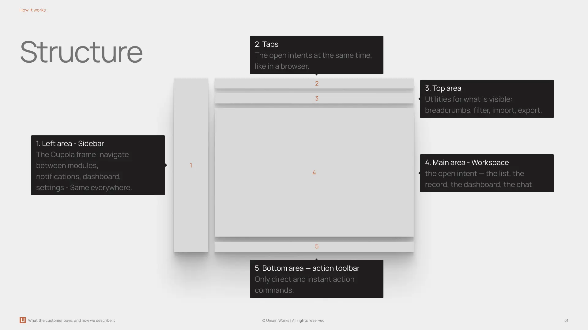
- Navegação vertical — módulos e intenções abertas
- Separadores de intenção — uma tarefa, um separador
- Área superior — só breadcrumbs, nunca controlos
- Conteúdo — o trabalho do módulo, na grelha UW
- Toolbar — as ações, por família
A ação principal muda com o contexto
A Toolbar só mostra as famílias que se aplicam. A ação primária acompanha o que o utilizador precisa a seguir; o vocabulário mantém-se.
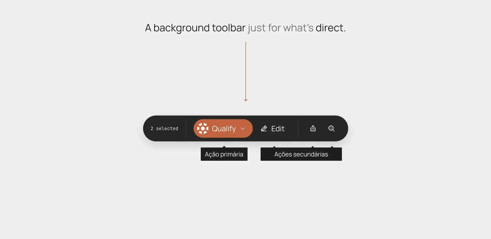
O agente, à parte
O agente tem o seu próprio botão, sempre à esquerda da Toolbar. Um pedido livre está sempre à mão.
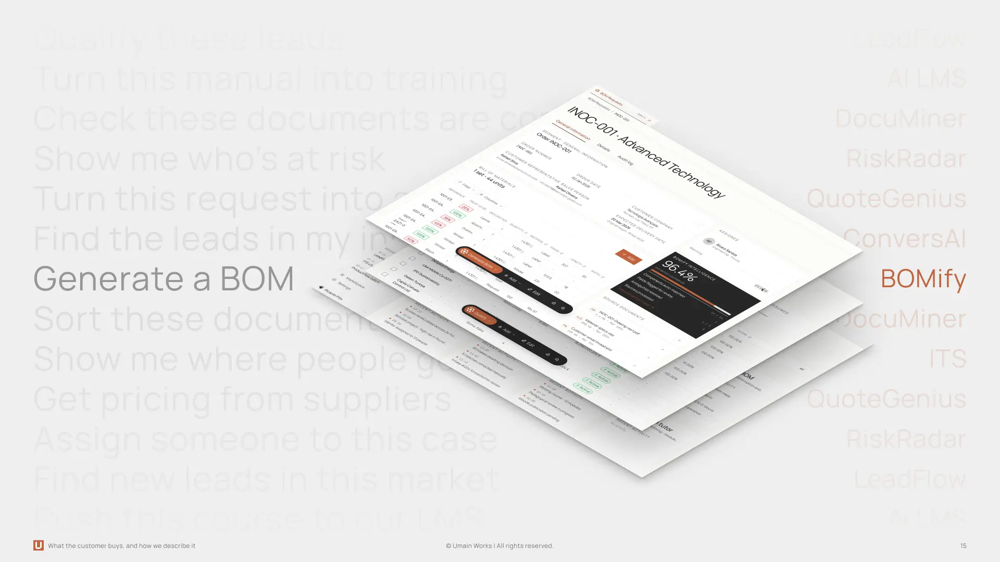
Os pontos de decisão
| Escolhemos | Em vez de |
|---|---|
| Só as ações que se aplicam — o que não faz sentido sai da Toolbar e fica na paleta ⌘K, com o motivo | Botões desativados sempre presentes, a alargar a barra sem explicar porquê |
| Ver e navegar fora da Toolbar — B vive no espaço de trabalho (separadores, links, breadcrumbs) | Misturar «fazer» e «ir para» na mesma barra |
| Definições dos módulos na shell — uma página de Definições do Cupola, com uma secção por módulo | Cada produto com o seu próprio ecrã de configuração escondido |
IA na plataforma
Os agentes fazem o trabalho pesado. As pessoas veem o que fizeram, percebem porquê e decidem — e podem sempre anular.
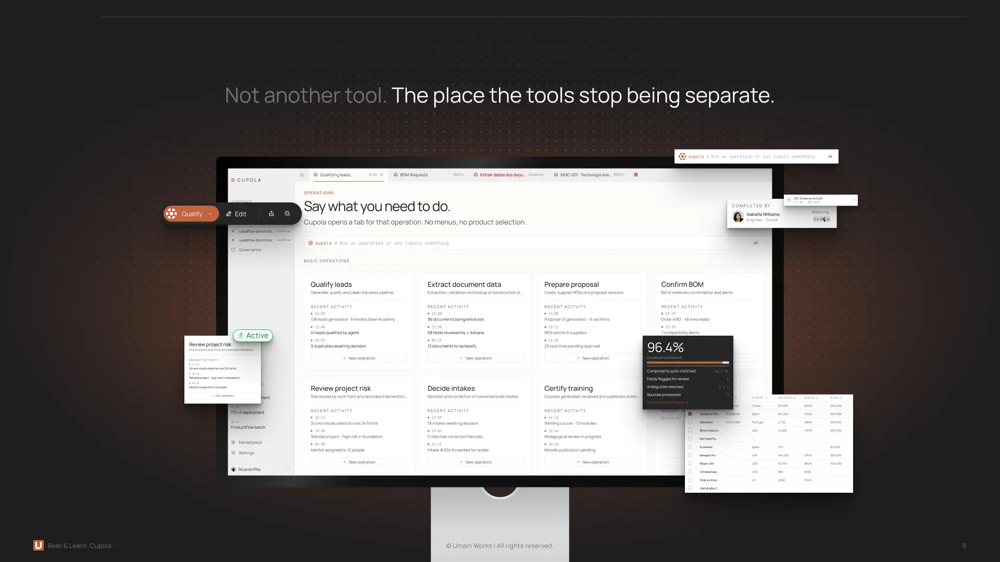
Visível
O agente trabalha à vista, e o resultado chega com o seu grau de confiança.
Explicável
Cada resposta mostra de onde veio: o gráfico, o SQL usado, as fontes e o porquê.
Governada
Regras para a IA, e um registo do que decidiu.
Como desenhámos a IA
| Visível | Explicável | Reversível | Governada |
|---|---|---|---|
| Progresso no botão e no separador; passos de raciocínio na conversa | Confiança por linha, fontes citadas, atualidade dos dados, explicação por perfil | Confirmar linha a linha, rever decisões e «Anular» após cada alteração | Autonomia e limites nas Definições; políticas e decisões auditadas em Governação |
Core, Vertical Packs e Connectors
Com os Product Owners, separámos o que é igual para todos, o que se adapta a um setor e o que liga aos sistemas do cliente.
Uma coisa. Quatro camadas.
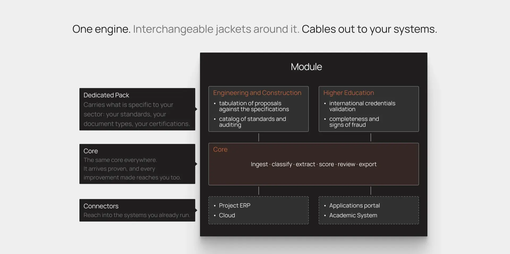
O Cupola é a plataforma — é isto que o cliente compra. O Pilar é a área de trabalho (uma prateleira interna, nunca vendida). O Módulo é a capacidade. A Solução é o conjunto montado para um setor ou um desafio: descrito, nunca com marca própria.
«Não aplicável» é uma decisão de produto
Em 6 de 12 produtos, a resposta foi «não há pack» — e os POs preferiram assinalá-lo a inventar um pack simbólico.
Administrar não é o mesmo que ler os dados
- Eixo de administração — perfis do Cupola (Administrador · Editor · Leitor): configurar o espaço de trabalho, gerir pessoas, alterar definições. Vive na shell.
- Eixo de dados — permissões do módulo: que tabelas, colunas e linhas cada grupo pode ler. Ser administrador não dá acesso aos dados. Vive no módulo.
«O Cupola nunca precisa de saber que tabelas alguém pode ler.»
Design system da UMAIN WORKS
As fundações e os componentes próprios da marca, em Figma e em código, para que todos os módulos falem a mesma linguagem visual.
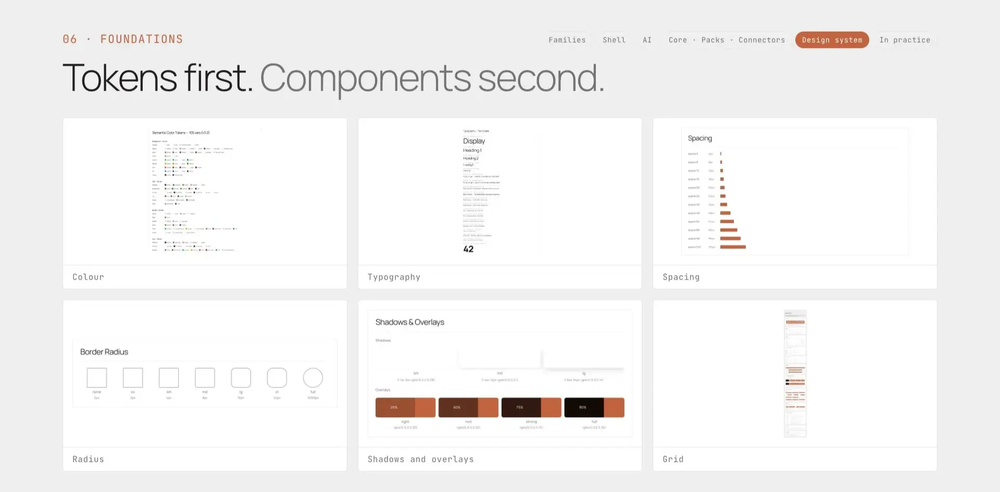
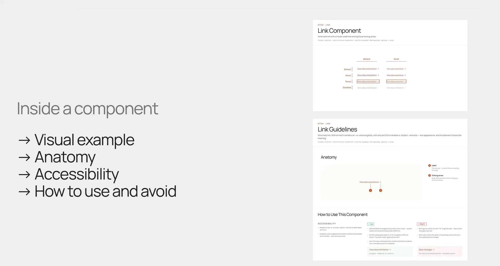
- 49 componentes documentados (componente + diretrizes) · 82 componentes e conjuntos públicos · 12 páginas de Foundations
- Dentro de cada componente: exemplo visual, anatomia, acessibilidade e o que fazer e não fazer.
Como está organizado
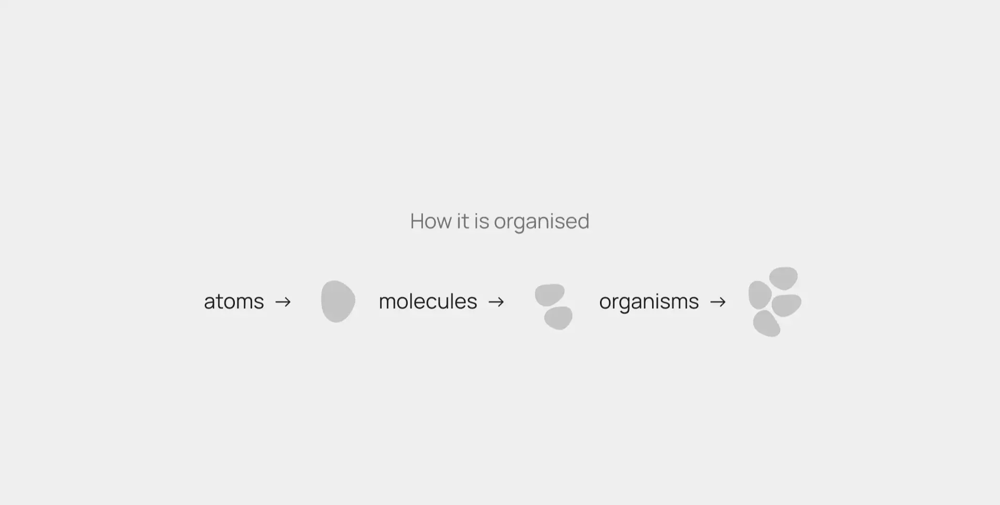
- Átomos — os blocos mais pequenos, como um botão, uma tag ou um campo de texto.
- Moléculas — átomos combinados numa pequena unidade com uma só função, como um campo de pesquisa com o seu botão.
- Organismos — partes maiores e autónomas da interface, construídas a partir de moléculas e átomos, como a Toolbar, uma tabela ou o Chat.
Uma fonte de verdade para cada equipa
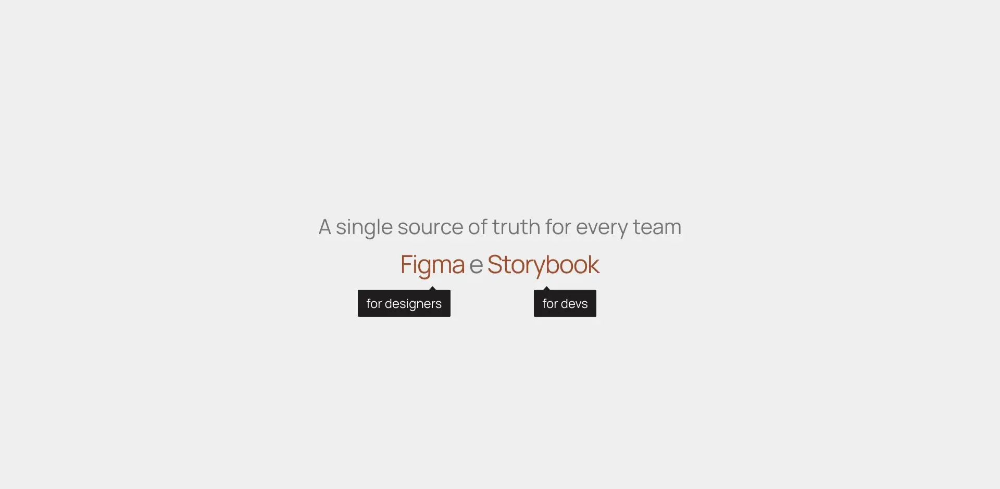
- Figma para designers
- Storybook para developers («como uso isto?»)
- Confluence para o contexto («porque é assim?»)
Na prática
O sistema em uso: ecrãs de protótipo construídos com os componentes e as regras do Cupola.
Do pedido de BOM à proposta, sem sair do Cupola
Do problema ao produto
«Tenho duzentas pessoas a operar equipamentos e toda a formação está em manuais que ninguém lê. E tenho uma auditoria em setembro. Têm alguma coisa para isto?»
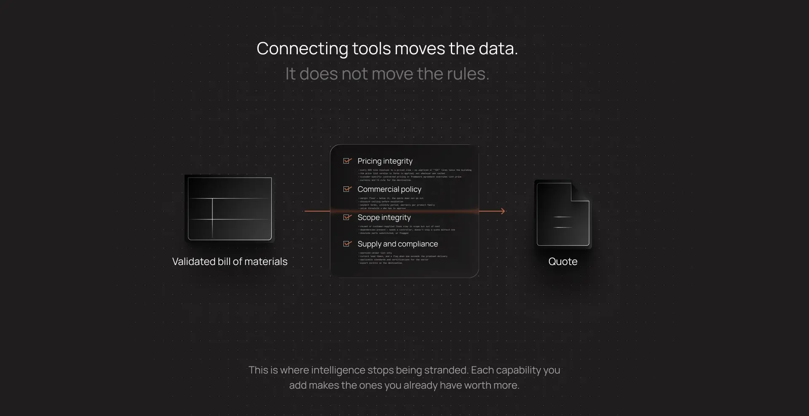
Formação corporativa — do manual à certificação. Módulos do pilar Lumina (AI LMS, ITS, LevelUP, RiskRadar) + um vertical pack de indústria (certificações com data de validade, matriz de competências por posto de trabalho, relatório de auditoria) + connectors (sistema de RH, controlo de acessos da fábrica). Foi vendido um só produto: o Cupola.
Resultados e aprendizagens
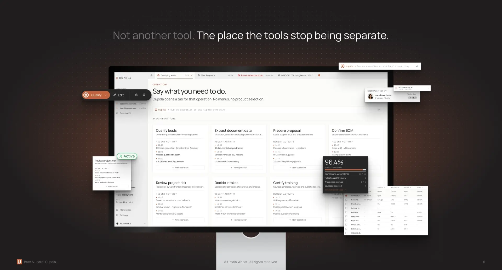
O que isto desbloqueia: seis meses depois, a mesma empresa precisa de encontrar fichas técnicas e manuais de fornecedores. Já estão no Cupola — ativar o DocuMiner é uma linha na fatura, não um processo de compras.
O que ainda está em aberto
- Definir o que é um «pack»: se um pack também puder ser conteúdo configurável, e não só código, alguns produtos passam a encaixar.
- Duas famílias em falta: comandos operacionais e o eixo «para quem é a ação».
- Toolbar: duas versões — uma barra única ou o agente à parte; ambas estão no protótipo para teste.
- Levantamento por fechar: um produto ainda por responder e um com resposta incompleta.
- Testes com utilizadores: plano e datas por confirmar.
Próximos passos
- Pacote do design system — os módulos começam a usar os mesmos componentes do protótipo.
- Migração módulo a módulo — cada módulo adota a shell, as famílias e as definições na shell.